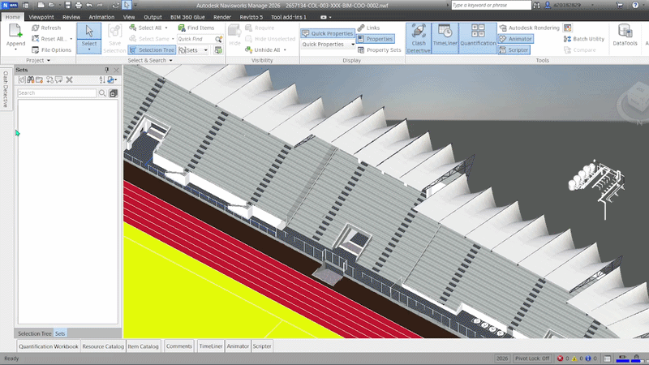
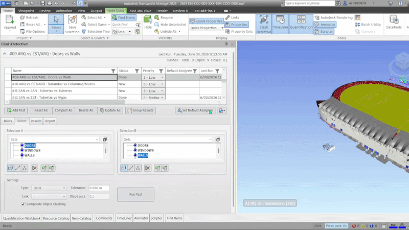
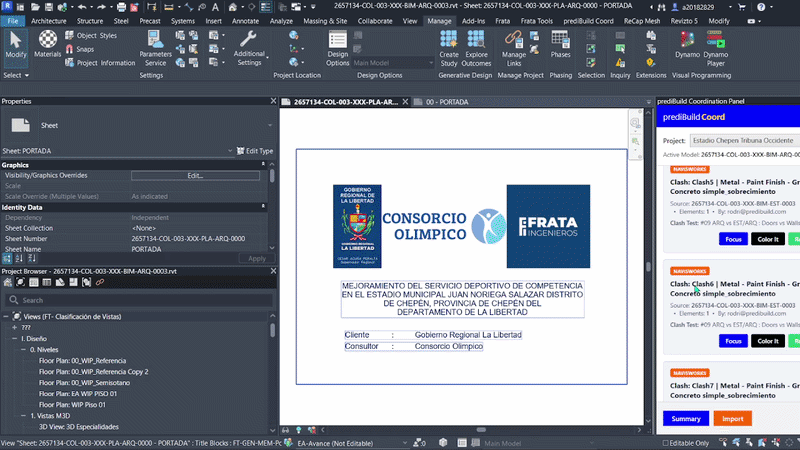
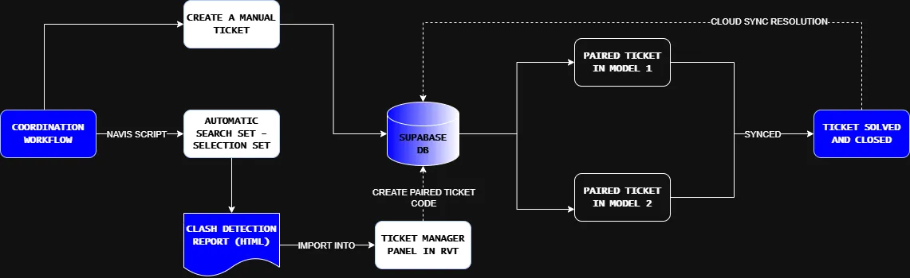

Closing the gap between
clash and fix.
Clash detection is fast. Resolving clashes usually isn't. This workflow was developed to bring clash coordination directly into Revit, where the fix actually happens — from automating Navisworks setup to resolving paired tickets without ever leaving the model.
Bored of making 200 search sets manually?
Before you can even run a clash test, Navisworks needs search and selection sets for every discipline, every category, every condition you want to check. On a large project that's hundreds of sets, built by hand, one click at a time. So the workflow starts earlier than Revit — it starts with a script that reads a simple CSV and generates all the search and selection sets inside Navisworks automatically.
One CSV in, every search set out.
Define your conditions in a spreadsheet — model name, category, property filters — and the script builds the full set of search and selection sets in Navisworks. What used to take an afternoon of repetitive clicking takes seconds.

Clashes are detected, but coordination is disconnected.
Navisworks can identify hundreds of clashes in seconds, but the coordination process that follows is often fragmented. Reports are exported, distributed manually, and tracked outside the BIM environment. Modelers need to search through reports, locate affected elements, and recreate the context inside Revit before they can even begin resolving the issue.
Reports exist outside the model
Clash information is usually stored in spreadsheets or HTML exports, forcing users to switch between platforms to understand and resolve issues.
Limited traceability
It becomes difficult to track who resolved a clash, when it was addressed, or whether the issue was actually corrected in the model.
Disconnected workflows between disciplines
Every clash involves at least two models and multiple stakeholders, but there is often no shared coordination state between them.
Bringing clash coordination into Revit.
The coordination panel imports Navisworks clash reports directly into Revit and converts each clash into coordinated tickets assigned to the corresponding disciplines. Instead of relying on spreadsheets or external tracking, modelers can open their Revit file and immediately see the clashes relevant to their model — isolate the issue, review the affected elements, and resolve it directly inside the BIM environment.
Import, focus, resolve — without leaving Revit.
Import Navisworks HTML clash reports with automatic extraction of element IDs and clash coordinates. Paired tickets are generated for each discipline involved. Direct focus on the clash location, visual highlighting of affected elements, and cloud synchronization through Supabase with multi-project and multi-user support.

From clash report to resolution.
Import clashes
Users can import Navisworks HTML reports or manually select elements from linked models. The system extracts clash data, including element references, coordinates, and model information.
Ticket generation
Each clash creates two linked coordination tickets — one for each discipline involved. Both tickets remain synchronized through the cloud database.
Review and resolve
Create temporary 3D views centered on the clash location with automatic section boxes. Highlight affected elements in the active view. Mark clashes as resolved — and the linked ticket on the other side updates automatically.
Cloud synchronization
All coordination data is stored in Supabase. The add-in calls PostgreSQL RPC functions that filter tickets by project and model name. When a ticket is resolved, a cascading function marks both sides as closed in a single transaction. Access is scoped per project and locked to each user's machine fingerprint.

Coordination happens where modeling happens.
This workflow removes the dependency on spreadsheets and disconnected reports. Clash information becomes part of the modeling environment, reducing coordination delays and improving visibility across disciplines. Instead of searching through reports, modelers can immediately navigate to the issue, understand the context, and resolve it directly in their workflow.
